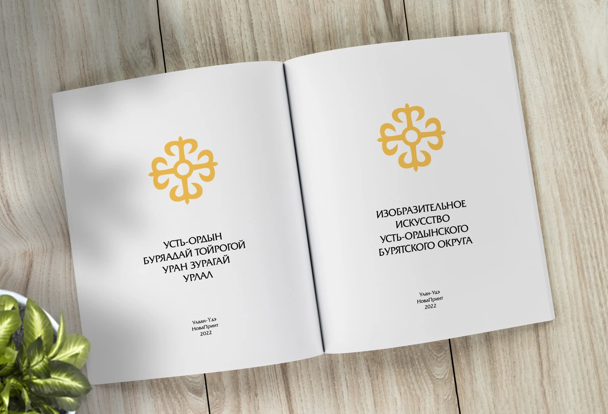
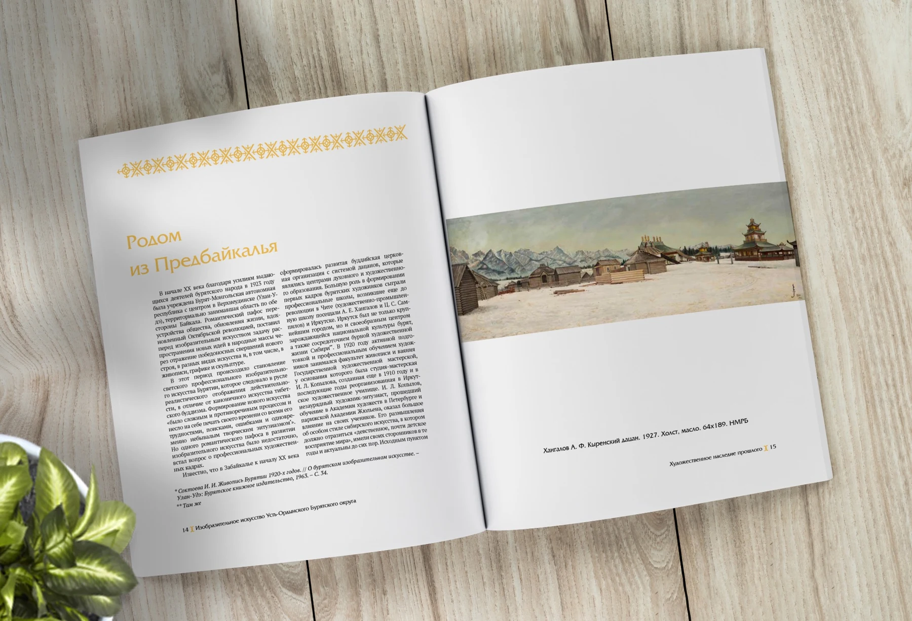
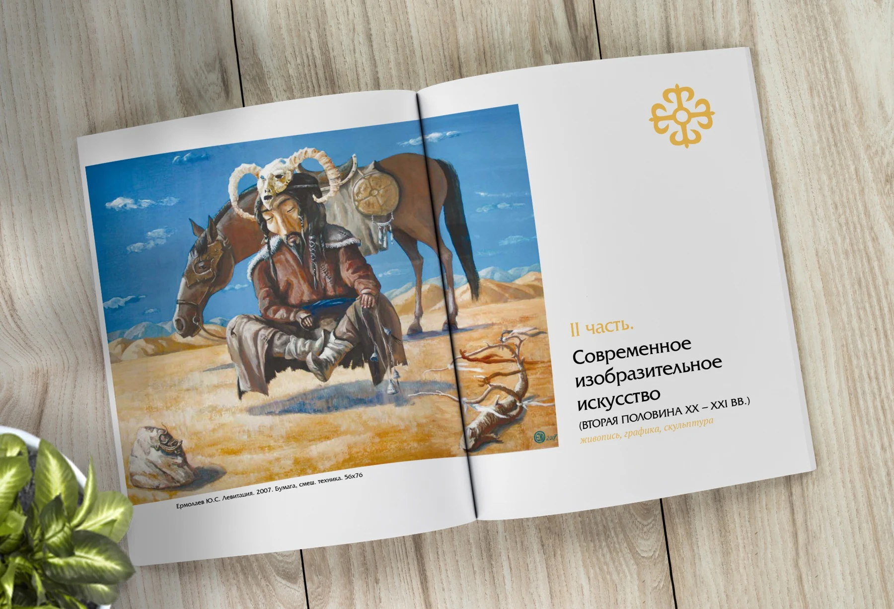
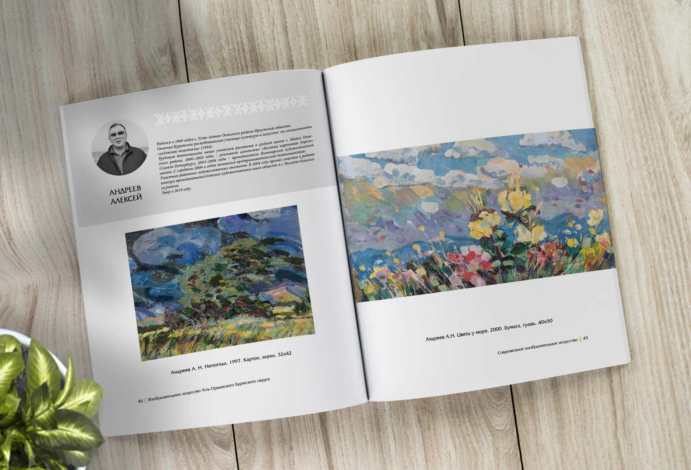
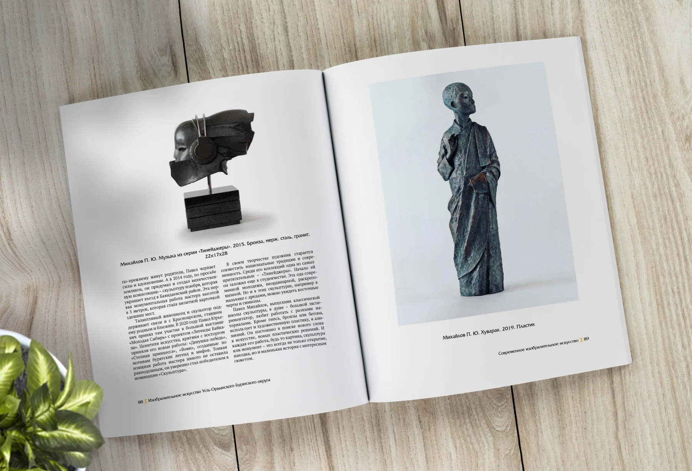
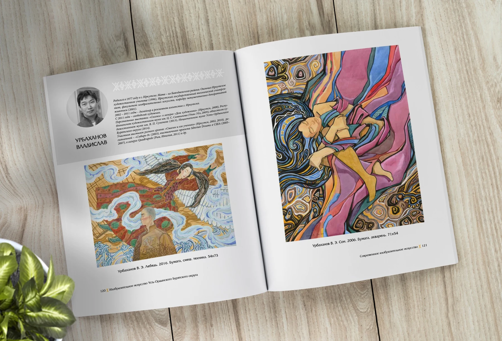
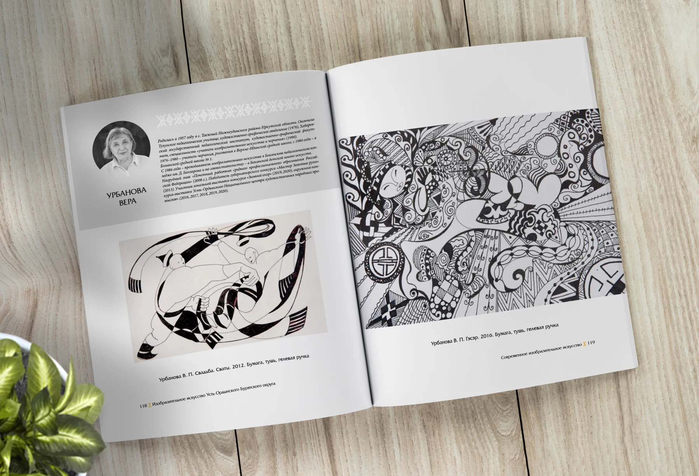

КНИЖНЫЙ ДИЗАЙН / АРТ-АЛЬБОМ
Изобразительное искусство
Усть-Ордынского
Бурятского округа

01 / ИЗДАНИЕ
Искусство региона.
Пространство книги.
Альбом объединяет произведения живописи, графики и скульптуры, биографии художников и материалы об искусстве Усть-Ордынского Бурятского округа. Дизайн выстраивает эти разные по характеру материалы в последовательное издание, где главная роль остаётся за произведениями.

02 / ГРАФИЧЕСКИЙ ЯЗЫК
Орнамент как
связующая деталь.
Орнаментальный знак появляется на обложке, титуле и в оформлении разделов. Глубокий синий, золотистые элементы и светлые поля формируют сдержанную рамку для ярких репродукций.


03 / ВЁРСТКА
У каждого произведения
свой масштаб.
Крупные репродукции чередуются с биографическими и текстовыми полосами. Композиция разворота учитывает пропорции работ: горизонтальные пейзажи, вертикальные скульптуры и насыщенную деталями графику. Подписи и биографии образуют второй, более спокойный уровень чтения.


04 / РИТМ АЛЬБОМА
От цвета
к линии.
Единые поля, структура подписей и расположение биографий сохраняют цельность издания при смене художественных техник. Цветные композиции и чёрно-белая графика получают достаточно свободного пространства для внимательного рассматривания.


В кейсе представлена работа над дизайном и вёрсткой издания. Авторство произведений искусства принадлежит художникам, указанным в альбоме.